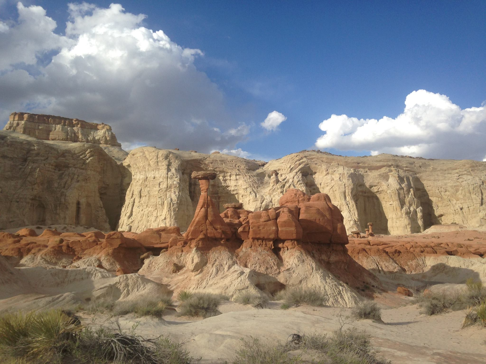

The Toadstools Trail
A signature toadstool hoodoo graced by a waxing gibbous moon

The view approaching the end of the Toadstools Trail
A cavern nestled under the towering white rocks

The alien landscape at the end of the Toadstools Trail
More toadstool hoodoos to the south of the trail's end
Zion National Park
Looking down into Zion Canyon from Observation Point
The old draw works used to lower timber down from Cable Mountain
The mesas near Zion's east entrance dappled with fall foliage
An unexpected snowstorm on the perch of Angel's Landing
Looking down into Zion Canyon from Angel's Landing